Simultaneous Q- and R-Mode Factor Analysis of Spatial Data in R
Source:vignettes/articles/qrfactor_manual.Rmd
qrfactor_manual.RmdA complete guide to the qrfactor
package
This manual teaches the qrfactor R package from the
ground up. It assumes only basic R literacy and explains every term as
it appears. Part 1 runs the whole method on a table of
African freshwater-use data — one qrfactor() call giving
PCA, R-mode, Q-mode, simultaneous Q+R, principal coordinate analysis and
multidimensional scaling. Part 2 takes the
same variables into spatial mode on the bundled African
shapefile, writing factor scores back to the attribute table and drawing
choropleth maps. Part 3 is a full reference, a
reproducibility script, a glossary and exercises, and Part
4 a set of student projects.
Dr George Owusu Department of Geography and Resource Development, University of Ghana
Version 1.5
Package: qrfactor
Core is pure R — spatial input uses 'sf' and 'sp'; maps use sp::spplot
For: geographers, hydrochemists, ecologists and anyone who classifies
both variables (R-mode) and samples (Q-mode) at once
Prerequisites: basic R literacy
License: GPL-2Every number and figure in this manual was produced by running the package. The script that regenerates them,
reproduce_manual.R, ships in this folder; its console output isrepro_output.txtand its figures are infigures/. Run it and you get exactly the tables and plots printed here.
Contents
Front matter: How to cite this manual
Part 1 — the method, step by step 1. What this
package does 2. Installing and loading 3. The fitted object: your
workbench 4. Getting the data 5. qrfactor(): the one call
5b. Data types, and the assumptions behind them 6. PCA — the shared
foundation 6b. The theorem underneath — Eckhart–Young (Eq. 3) 7. R-mode:
structure among variables 8. Q-mode: structure among samples 9.
Simultaneous Q+R: the biplot 10. Scores 11. print() and
summary() 11b. The internal correctness check —
reconstruction (Eq. 9) 12. Scaling: the single most important choice 13.
Transforming skewed variables 14. Principal coordinate analysis (PCoA)
15. Multidimensional scaling (MDS) 15b. Correspondence analysis view
(type="ca")
Part 2 — spatial mode 16. From table to map 17.
Reading a shapefile 18. Scores written back to the attribute table 19.
plot="map": the choropleths 20. Clustering:
plot="cluster" and "compare" 21. Testing the
clusters: ANOVA and Kruskal–Wallis 22. Distributional diagnostics:
type="diagnose" 22b. Can we see loadings on a map? 22c.
Point maps vs. choropleth maps 23. Joining a CSV to a shapefile 24.
Using an in-memory spatial object 24b. The African water paradox, in
numbers 24c. What makes qrfactor robust
Part 3 — reference 25. qrfactor()
argument reference 26. plot.qrfactor() argument reference
27. The object’s elements 28. Reproducing the figures 29. Glossary 30.
Exercises
Part 4 — projects 33. The project brief template 34. Geography and spatial-core projects 35. Economics and livelihoods projects 36. Earth-science and environment projects 37. Medicine and public-health projects 38. AQUASTAT and water-focused projects
- References
PART 1 — The method, step by step
1. What this package does
Most multivariate methods classify one thing at a time. R-mode factor analysis finds structure among your variables (which measurements move together?). Q-mode finds structure among your samples (which observations resemble each other?). Traditionally you run these separately, in different tools, and reconcile them by hand.
qrfactor does both at once, from a single call, and
returns one object that carries the R-mode loadings, the Q-mode
loadings, and — its distinctive move — both on a single set of
axes so variables and samples can be read on the same biplot. When
the input is a shapefile, it also writes the resulting scores and
cluster memberships straight back to the map’s attribute table, so the
last step of the analysis is a map.
The problem this manual solves — Africa’s water paradox. Africa is described, in the same breath, as water-rich and water-stressed. Both cannot be true everywhere. The question has two sides that a single method rarely answers together: (R-mode) which measurements define how a country uses water, and (Q-mode) which countries resemble each other in that use? We put the bundled data — domestic, industrial and agricultural withdrawal, renewable resources, total and per-capita withdrawal for 50 African countries — through one
qrfactor()call and read the answer off the biplot and the map. The finding, developed across this manual: water use and water availability are almost independent, and the heaviest users are on average the least resource-endowed. That is the paradox, quantified.
Six analyses come out of the one function:
Table 1: The six analyses qrfactor() produces
from a single call.
| Analysis | What it answers |
|---|---|
| PCA | What are the dominant axes of variation? |
| R-mode factor analysis | Which variables group together? |
| Q-mode factor analysis | Which samples group together? |
| Simultaneous Q + R | How do variables and samples relate on shared axes? |
| Principal coordinate analysis (PCoA) | Ordination from a distance view |
| Multidimensional scaling (MDS) | A low-dimensional map of sample similarity |
Key terms, defined once
- Loading — the correlation-like weight linking an original variable to a factor (axis). Large magnitude = the variable defines that axis.
- Score — the coordinate of a sample (or variable, in Q-mode) on a factor.
- Eigenvalue — the amount of variance an axis captures. Bigger = more important. The Kaiser rule keeps eigenvalues > 1.
- Q-mode vs R-mode — Q classifies samples/rows; R classifies variables/columns.
- Biplot — one plot showing variables and samples together.
2. Installing and loading
From GitHub:
# install.packages("remotes")
remotes::install_github("gowusu/qrfactor")
library(qrfactor)The core is pure R. For the spatial workflow (Part
2) you also need sf (to read shapefiles) and
sp (for the maps):
install.packages(c("sf", "sp"))Three contributed packages power specific diagnostics and are pulled
in automatically: cluster (cluster plots),
mvoutlier (multivariate outliers), pvclust
(bootstrap cluster support).
System note. Verified on R 4.6.0 (Windows) with
sf 1.1-1 and sp 2.2-3. Input data must be
numeric — drop or encode categorical columns before you
start.
3. The fitted object: your workbench
Everything revolves around the object returned by
qrfactor(). Think of it as a workbench that carries the
decomposition and every derived quantity. We build that object once here
and reuse it as mod throughout Part 1 (the data and
variables are introduced properly in Section 4; they appear here only so
mod exists for this section):
csv <- system.file("external", "Africanfreshwater.csv", package = "qrfactor")
var <- c("Domestic","Industry","Agricultur","Resources","withdrawal","perCapitaW")
mod <- qrfactor(csv, var = var) # the running model for all of Part 1Printing names() on it shows the full contents:
names(mod) [1] "gisdata" "correlation" "eigen.vector" "eigen.value"
[5] "diagonal.matrix" "r.loading" "q.loading" "rloading"
[9] "qloading" "rloadings" "qloadings" "combined.loadings"
[13] "r.scores" "q.scores" "rscores" "qscores"
[17] "combined.scores" "data1" "rownames" "variables"
[21] "mds" "coordinates" "x.standard" "loadings"
[25] "scores" "pca.loadings" "pca" "pca.scores"
[29] "pcascores" "variance" "cumvariance" "data"
[33] "normal" "transform" "nfactors" "call"Several names are convenience aliases (r.loading =
rloading = rloadings; q.scores =
qscores; pca = pca.loadings).
Section 27 catalogues all of them with their dimensions.
4. Getting the data
The package ships a table of water use for 50 African countries. Load it — in a real study you would swap in your own numeric table in the same shape.
csv <- system.file("external", "Africanfreshwater.csv", package = "qrfactor")
raw <- read.csv(csv)
head(raw) ID CODE COUNTRY Year Domestic Industry Agricultur Population Resources
1 1 ALG Algeria 2000 37.662273 22.605373 111.091935 35.422589 11.6
2 2 ANG Angola 2000 4.238469 3.132781 11.056876 18.992707 184.0
3 20 BEN Benin 2001 4.515976 3.245858 6.350591 9.211741 25.8
4 21 BOT Botswana 2000 39.391799 17.293960 39.391799 1.977569 14.7
5 22 BUF Burkina Faso 2000 6.385576 0.491198 42.243042 16.286706 17.5
6 23 BUR Burundi 2000 5.757935 2.042526 26.212421 8.518862 3.6
withdrawal perCapitaW perCapitaR
1 6.07 171.35958 0.327475
...We analyse six numeric columns — domestic, industrial and agricultural water use, renewable resources, total withdrawal, and per-capita withdrawal:
var <- c("Domestic","Industry","Agricultur","Resources","withdrawal","perCapitaW")Reading the raw data. Even before any analysis, the extremes hint at the paradox. The largest agricultural users are Swaziland (839), Sudan (835), Madagascar (710) and Egypt (695) — arid or irrigation-dependent economies. The largest renewable resource holders are Congo (1283) and the Democratic Republic of the Congo (832) — equatorial, water-abundant, yet with tiny withdrawals (Congo’s total is 0.03). So the countries with the most water are not the ones using the most. Factor analysis turns that eyeball impression into measured axes.
5. qrfactor(): the one call
Point qrfactor() at the CSV and name the variables. That
is the whole model.
mod <- qrfactor(csv, var = var)
mod$call
#> qrfactor.default(source = csv, var = var)
dim(mod$data)
#> [1] 50 6qrfactor() accepts input five ways — a data
frame, a CSV/txt path, a
shapefile (folder + layer), an in-memory
spatial object, and a CSV↔︎shapefile join. Part
2 covers the spatial forms. For a plain data frame you can call it with
no other arguments:
# equivalent, from an in-memory data frame:
mod <- qrfactor(raw[var])5b. Data types, and the assumptions behind them
qrfactor is built on the eigen-decomposition of a
correlation or covariance matrix, so its native input is
quantitative. But the door is wider than that if you
prepare the data:
- Quantitative (continuous / ratio) — the intended input: withdrawals, areas, concentrations, counts. Used directly.
- Ordinal (Likert, ranks, ordered classes) — treat as numeric. Scoring a 1–5 agreement scale and analysing it is standard practice in the social sciences; it is an approximation (the gaps are assumed equal), but a serviceable one.
- Qualitative / nominal (categories, presence–absence) — not analysed raw; encode it numerically first. Turn a category into indicator (0/1) columns, or use frequencies / counts per class. Once the column is numeric, every analysis in this manual works on it.
On correspondence and coordinate views.
type="coord"(PCoA) andtype="ca"(correspondence) present the ordination under their own axis labels. On ordinary Euclidean data, principal-coordinate analysis is mathematically the same as PCA, so the PCoA view is exact (Section 14).type="ca"draws the correspondence-analysis biplot of the eigen-structure — a valid ordination view of how the variables and samples co-vary, read the same way as the R/Q biplot. The dedicated correspondence-analysis section in Part 1 gives its equation, a worked interpretation, and the point at which frequency or contingency-table data should be dummy-coded before analysis.
What the factor model assumes (and how this dataset measures up):
- Numeric, roughly interval-scaled variables — met (or met via the encoding above).
- Linear associations. Factor analysis captures linear correlation; threshold or strongly nonlinear structure is missed. Skewed variables should be transformed (Section 13) — the water data are heavily right-skewed (Section 22).
- Enough samples for the variables. Rule of thumb: ≥ 5–10 observations per variable. Here 50 countries for 6 variables — comfortable.
-
No perfect multicollinearity. Near-duplicate
variables make the matrix singular. This dataset violates it —
AgriculturandperCapitaWcorrelate 0.99, which collapses the sixth eigenvalue to ~0 and disables the Mahalanobis outlier panel (Section 22). Drop or combine such pairs. - Real correlations exist. If variables are near-independent, the factors summarise little. (KMO and Bartlett tests that quantify this are a planned addition, not in 1.5.)
-
Outliers distort correlations. Screen with
type="diagnose"(Section 22).
6. PCA — the shared foundation
Every analysis here starts from the eigen-decomposition of the (scaled) data. The eigenvalues tell you how many axes matter; their square roots are the familiar PCA standard deviations.
mod$eigen.value
#> [1] 3.360e+00 1.079e+00 9.059e-01 5.212e-01 1.339e-01 9.076e-07
sqrt(mod$eigen.value) # PCA standard deviations
#> [1] 1.8331 1.0386 0.9518 0.7219 0.3659 0.0010
mod$variance # % variance per axis
#> [1] 56.007 17.977 15.098 8.686 2.231 0.000
mod$cumvariance # cumulative %
#> [1] 56.01 73.98 89.08 97.77 100.00 100.00Reading this: Factor 1 alone explains 56% of the variation, and the first two axes 74%. By the Kaiser rule (eigenvalue > 1) you retain two factors (3.36 and 1.08; the third is 0.91, just under 1). The sixth eigenvalue is essentially zero — a signal that two variables are nearly redundant (Section 29).
Where those axes come from — the correlations. The
decomposition is driven by the correlation matrix
(round(mod$correlation, 2)):
Domestic Industry Agricultur Resources withdrawal perCapitaW
Domestic 1.00 0.75 0.33 -0.19 0.29 0.44
Industry 0.75 1.00 0.47 -0.15 0.65 0.55
Agricultur 0.33 0.47 1.00 -0.12 0.63 0.99
Resources -0.19 -0.15 -0.12 1.00 -0.04 -0.14
withdrawal 0.29 0.65 0.63 -0.04 1.00 0.65
perCapitaW 0.44 0.55 0.99 -0.14 0.65 1.00Three facts jump out, and together they are the paradox: 1.
Agricultur and perCapitaW correlate
0.992 — in Africa, per-capita water use is agricultural water
use; irrigation dominates the total. (This near-duplication is why the
6th eigenvalue collapses to zero.) 2. Domestic and
Industry correlate 0.75 — the two “modern-economy”
uses rise together with development and urbanisation. 3.
Resources correlates with everything at −0.04 to
−0.19 — renewable availability is essentially
uncorrelated with (if anything, weakly opposed to) use. Having
water and using water are decoupled. This is why Resources
gets a factor almost to itself (Factor 2), instead of joining the use
variables on Factor 1.
The PCA loadings (eigenvectors) live in mod$pca:
mod$pca # PC1..PC6 loadings
mod$pca.scores # each country's PCA scoresThe equation behind this.
qrfactorforms a correlation (or covariance) matrix R, then solves R v = λ v. The eigenvectors v are the PCA/eigen loadings; the eigenvalues λ areeigen.value;varianceis100·λ / Σλ. The R-mode loadings are the eigenvectors scaled by√λ(the “diagonal matrix”diag(√λ)is stored asmod$diagonal.matrix).
6b. The theorem underneath — Eckhart–Young (Eq. 3)
Everything qrfactor returns — R-mode loadings, Q-mode
loadings, scores — rests on one classical result, the
Eckhart–Young theorem (Davis, 2002; Owusu, 2014). It
states that any real matrix can be written as the product of two
orthonormal matrices and a diagonal matrix of non-negative singular
values:
is an matrix whose columns are orthonormal (tied to the observations, the Q-mode side); is the diagonal matrix of singular values (the square roots of the eigenvalues in
mod$eigen.value); and is an matrix whose columns are orthonormal (tied to the variables, the R-mode side). Because the same links and , variables and observations can be placed on one set of axes — which is exactly what makes the simultaneous Q+R biplot (Section 9) possible. Here ismod$eigen.vectorand ’s diagonal isdiag(sqrt(mod$eigen.value)), stored asmod$diagonal.matrix.
The equations that follow in Sections 7–11 (Eq. 4–9) are simply Davis’s (2002) step-by-step solution of this one identity — you can read the sections without them, but they show precisely how each returned quantity is computed.
7. R-mode: structure among variables
R-mode loadings say how each variable projects onto each factor:
mod$r.loading Factor1 Factor2 Factor3 Factor4 Factor5
Domestic -0.6666965 0.5294354 -0.39473279 -0.2885022 -0.19017
Industry -0.8241888 0.2915117 -0.36840674 0.1793401 0.26048
Agricultur -0.8586508 -0.3532160 0.29420431 -0.2244000 0.03233
Resources 0.2174981 -0.6759412 -0.69090766 -0.1358079 0.00091
withdrawal -0.7906390 -0.2489536 -0.04561234 0.5314104 -0.16863
perCapitaW -0.9093557 -0.2640636 0.21991029 -0.2336569 0.01965Interpretation. On Factor 1, five
of six variables load strongly and negatively (−0.67 to −0.91) — this is
a general “scale of water use” axis: countries high on domestic,
industrial, agricultural and per-capita use sit at one end. Only
Resources (renewable water availability) breaks ranks
(+0.22), loading instead on Factor 2 (−0.68) — a
“resource-rich vs use-heavy” contrast.
The R-mode equations (Owusu, 2014, Eq. 4–5). R-mode starts from the minor product of the scaled matrix — its variable-by-variable cross-product, which under the default
scale="sd"is the correlation matrix:The eigenvectors and singular values of give the R-mode loadings by scaling each eigenvector by the square root of its eigenvalue:
This is exactly
mod$r.loading. (Checked on this dataset:mod$r.loadingequalsmod$eigen.vector %*% diag(sqrt(mod$eigen.value))to zero rounding error.)
plot(mod, type = "loadings", plot = "r")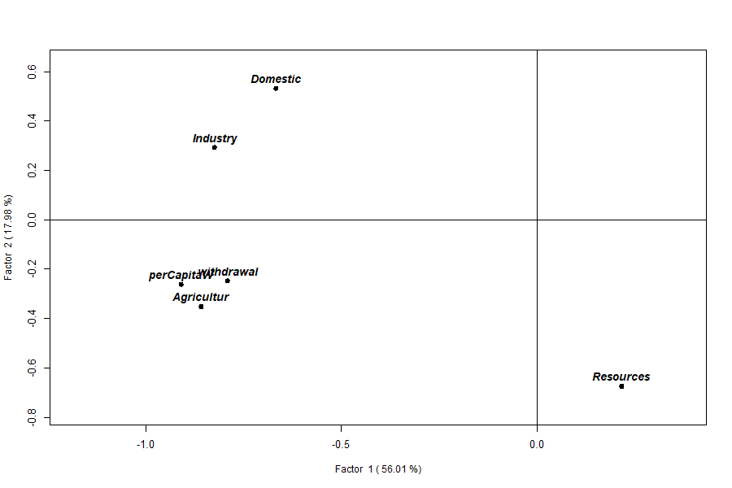
Resources sits apart on Factor 2.8. Q-mode: structure among samples
Where R-mode (Section 7) asks which variables move together, Q-mode asks which observations resemble one another. Two countries with similar Q-mode loading vectors have a similar overall water-use profile — a similar balance of domestic, industrial, agricultural and per-capita use relative to their resources — and sit close together on the factors. This is a genuinely different question from R-mode, and an important one: it is the classification that underlies the clustering (Section 20), the country rankings and indices (Section 18), and ultimately the maps of Part 2. And because Q-mode shares the eigenvectors with R-mode (Eq. 5–6), a country’s Q-mode loadings are also its coordinates on the shared biplot (Section 9) — so reading the two modes together tells you not only which countries are alike but why (which variables they lie near).
Q-mode loadings place each country (sample) on the factors:
The Q-mode equation (Owusu, 2014, Eq. 6). Q-mode reuses the same eigenvectors from Eq. (4), but multiplies the scaled data by them so that each observation (country) — not each variable — is placed on the factors:
This is
mod$q.loading, one row per country. Because Eq. (5) and Eq. (6) share the eigenvectors , the variable loadings and the country loadings live on the same axes — the basis of the simultaneous biplot (Section 9).
head(mod$q.loading) Factor1 Factor2 Factor3 Factor4 Factor5
1 -0.15096354 0.16396565 -0.09845319 0.06320278 0.11746 # Algeria
2 0.17385345 -0.02725198 -0.02076715 0.03416281 0.01751 # Angola
3 0.16418932 0.04313861 0.05101351 0.05296878 0.01864 # Benin
...
plot(mod, type = "loadings", plot = "q") # Q-mode loading map
plot(mod, type = "scores", plot = "q") # Q-mode scores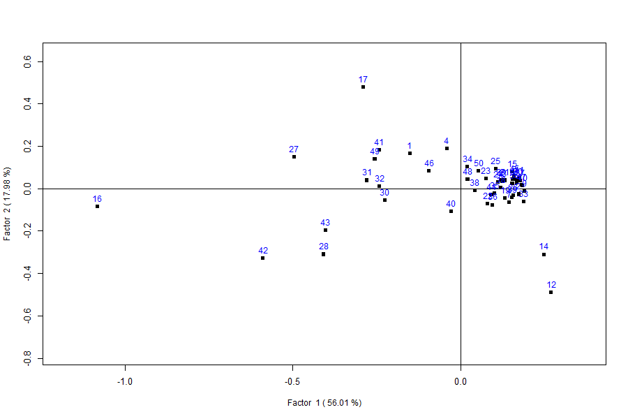
Interpretation. Read the Q-mode loadings exactly as the R-mode ones (Section 7): a country’s Factor 1 score is its overall scale of water use, its Factor 2 score its resource standing. The strongest negative Factor 1 scores — Egypt (−1.08), Sudan (−0.59), Libya (−0.50), Madagascar (−0.41) and Swaziland (−0.40) — are the heavy abstractors, and they resemble one another far more than any resembles a small economy. The most negative Factor 2 scores — Congo (−0.49) and the DR Congo (−0.31) — single out the water-rich equatorial pair, close to each other and to no one else. The great majority (Senegal, Zambia, Tanzania, Niger, Guinea…) form a tight knot near the origin: modest use, unremarkable resources, all alike. Those three groupings — heavy users, water-rich, and the low-use majority — are precisely the clusters Part 2 formalises and maps.
Labelling countries instead of numbers (the
rowname= argument). By default the Q-mode points
carry their row numbers. Pass rowname= a column
name to label them with something meaningful — here the country name —
so you can read the plot without a lookup table:
plot(mod, type = "loadings", plot = "q", rowname = "COUNTRY")This is your first sight of rowname=, and it applies to
every plot and map in the manual. With all 50 countries the labels crowd
together, so numbers are often clearer for the dense Q-mode cloud;
rowname="COUNTRY" comes into its own on the combined biplot
(Section 9) and, above all, on the choropleth maps of Part 2, where each
polygon can carry its country name.
9. Simultaneous Q + R: the biplot
The headline output. Called with no plot= argument,
plot() draws variables (hollow diamonds, bold labels) and
countries (filled squares, numbered) on the same two
factors, so you read both classifications at once:
plot(mod) # or plot(mod, type = "loadings")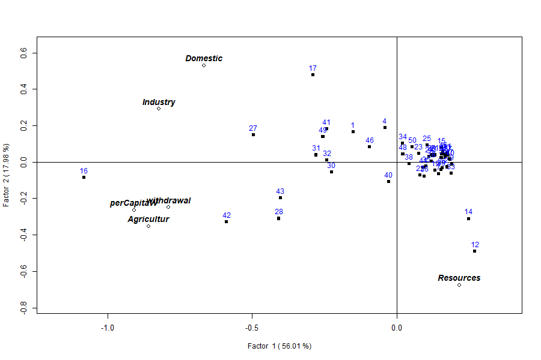
Reading the biplot (axis labels carry the variance: Factor 1 = 56%, Factor 2 = 18%). Variables pointing the same way are correlated; a country plotted near a variable scores high on it. The plot resolves into meaningful regions:
-
Far left — the heavy users. Point 16
(Egypt) is the extreme, joined by 42
(Sudan), 28 (Madagascar), 27
(Libya), 30 (Mali), 31
(Mauritania) and 43 (Swaziland) — the
big agricultural abstractors, sitting where the
Agricultur/perCapitaW/withdrawalarrows point. High water use = negative Factor 1. -
Bottom-right — the water-rich. Points 12
(Congo) and 14 (DR Congo) sit alone by
the
Resourcesarrow: vast renewable supply, almost no withdrawal. High resources = negative Factor 2. -
Top — the domestic/industrial economies. Point 17
(Equatorial Guinea, domestic use 132, agriculture ~1)
with 1 (Algeria) and 4 (Botswana),
where
DomesticandIndustrypoint. - Dense right cluster — the low-use majority. The tight knot of small economies (Comoros, Cape Verde, Djibouti, Gambia, Rwanda, Togo, Uganda…).
So the axes read as: Factor 1 = the overall scale of (agriculture-driven) water use; Factor 2 = the resource-versus-use contrast. Congo and Egypt land almost as far apart as the data allows — one has the water, the other uses it.
The combined loadings and scores are available directly:
head(mod$loadings) # R-mode rows first, then Q-mode rows (56 x 6)
head(mod$scores) # combined scoresUse rowname= to label points with a column instead of
row numbers:
plot(mod, rowname = "COUNTRY")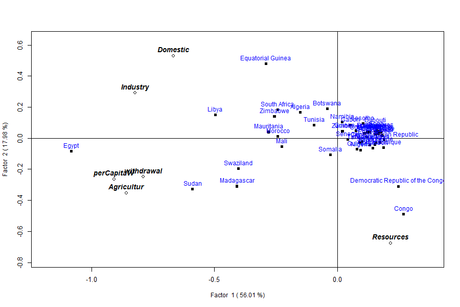
rowname="COUNTRY" instead of row
numbers.10. Scores
What a score is, and why it matters. A
loading describes how a variable (R-mode) or a country (Q-mode)
relates to a factor; a score is the actual
coordinate a sample takes on that factor axis once the
loadings are applied to its scaled data (Eq. 7–8). The distinction is
practical, not pedantic. Loadings describe the structure — what
Factor 1 means. Scores are the per-sample numbers you act
on: the values you rank, normalise into an index, export, colour a
map by, or hand to k-means. Everything Part 2 writes back onto the
shapefile — Factor1, index1,
cluster1 (Section 18) — is built from scores, and the
clustering in Section 20 runs on scores, not loadings. So the rule of
thumb is: read loadings to interpret the axes; use scores to do
something with each place.
type="scores" plots the factor scores rather than
loadings. plot= selects the panel(s): "q",
"r", "qr" (side by side), or
"all" (a 3-panel layout).
The score equations (Owusu, 2014, Eq. 7–8). A score projects the scaled data onto the loadings. R-mode scores use the R-mode loadings; Q-mode scores use the transposed scaled matrix and the Q-mode loadings:
mod$r.scores,mod$q.scores, and the combinedmod$scoreshold these — the coordinates you would export, map, rank or cluster (Sections 18 and 20).
plot(mod, type = "scores") # combined
plot(mod, type = "scores", plot = "qr") # R and Q side by side
plot(mod, type = "loadings", plot = "all")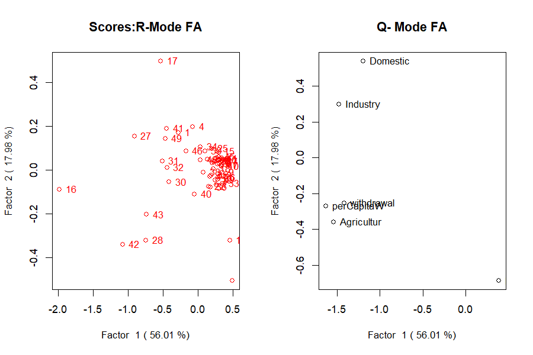
type="scores", plot="qr") — the
coordinates carried forward to ranking, mapping and clustering.11. print() and summary()
print(mod) dumps the loadings, scores and eigenvalues.
summary(mod) is the compact report a factor-analysis paper
wants:
summary(mod)Call:
qrfactor.default(source = csv, var = var)
eigen value
[1] 3.360 1.079 0.906 0.521 0.134 0.000
Percentage Explained
[1] 56.007 17.977 15.098 8.686 2.231 0.000
Cumulative Percentage Explained
[1] 56.01 73.98 89.08 97.77 100.00 100.00
R-loadings
Factor1 Factor2 ...
Domestic -0.6666965 0.5294354 ...
...11b. The internal correctness check — reconstruction (Eq. 9)
How do we know the decomposition is right? The Eckhart–Young theorem (Section 6b) supplies a reconstruction identity: combine the Q-mode loadings, the inverse square root of the singular values, and the transposed R-mode loadings, and you must recover the scaled matrix you started from:
If Eq. (9) fails to reproduce the input, the computation is wrong (Owusu, 2014). This is
qrfactor’s built-in validity check — the same one the 2014 paper ran on the Meuse river data (its Table 1).
Run on the manual’s own water data, the identity holds to machine precision:
AQ <- mod$q.loading
AR <- t(mod$r.loading)
sv <- diag(1 / sqrt(mod$eigen.value))
Wmod <- AQ %*% sv %*% AR # Eq. (9)
max(abs(mod$x.standard - Wmod))
#> 6.66e-16 (zero, to rounding)The reconstruction matches mod$x.standard (the scaled
)
to about
, so the loadings, scores and
eigenvalues are mutually consistent: the model is mathematically correct
on this dataset, exactly as the paper demonstrated on Meuse.
12. Scaling: the single most important choice
scale= decides what matrix is decomposed, and it changes
everything. The default "sd" standardises each variable
(correlation-based, so all variables count equally). The covariance
options ("n", "centre", "data")
leave the raw magnitudes in, so big-numbered variables dominate.
The scaling equations (Davis, 2002; Owusu, 2014, Eq. 1–2). Every analysis works on a scaled matrix built from the raw data . With
scale="n", each value is centred on its column mean and divided by :With the default
scale="sd"it is additionally divided by the column standard deviation :where is variable in observation , its column mean, its column standard deviation and the number of rows.
"sd"is the default because it bounds the loadings to the range – (Owusu, 2014), so they read like correlations;"n","centre"and"data"keep the raw units and let big-magnitude variables dominate. The resulting is whatmod$x.standardstores.
for (sc in c("sd","normal","n","centre","data"))
print(qrfactor(csv, var = var, scale = sc)$eigen.value)Table 2: How scale= changes the
decomposition — eigenvalue 1 and cumulative variance of the
first two factors.
scale |
Basis | Eigenvalue 1 | Cumulative % (1st two) |
|---|---|---|---|
sd (default) |
correlation | 3.36 | 74.0 |
normal |
correlation | 3.36 | 74.0 |
n |
covariance / √n | 106622 | 99.3 |
centre |
covariance | 5331116 | 99.3 |
data |
raw cross-product | 8119872 | 99.4 |
Why the split changes so drastically. It comes down
to what units the decomposition sees. Under "sd"
(Eq. 2) every column is divided by its own standard deviation, so all
six variables arrive on a common, unitless footing — the matrix
decomposed is effectively the correlation matrix, and
each variable contributes one unit of variance. The eigenvalues then
measure shared correlation, and no single variable can dominate
by sheer magnitude: hence the balanced 56%/18% split. Under the
covariance scalings ("n", "centre",
"data") the columns keep their original units, so a
variable measured in the thousands carries thousands of times more
variance than one in single digits. The leading eigenvector simply
aligns with that largest-magnitude column, which is why Factor 1
swallows 99%+ — it is mostly recording which variable has the
biggest numbers, not which variables co-vary. That is the whole
reason "sd" is the default whenever variables are on
different scales.
The lesson: on the correlation scale the six variables share the
variance (56%/18%); on a covariance scale one or two large-magnitude
variables swallow almost all of it (99%+). Use "sd"
unless you have a specific reason not to — and always report
which you used.
13. Transforming skewed variables
Water-use data are strongly right-skewed (see the histograms in
Section 22). Two tools: transform all variables with
scale="log"/"sqrt", or transform
named variables with t=.
qrfactor(csv, var = var, scale = "log")$eigen.value
#> [1] 3.4400 1.1768 1.0055 0.1807 0.1541 0.0429
# square-root just the two most skewed:
m <- qrfactor(csv, var = var, t = c("withdrawal","Resources"))
m$eigen.value
#> [1] 3.4196 1.1454 0.8854 0.3786 0.1710 0.0000
plot(m, main = "sqrt-transformed withdrawal & Resources")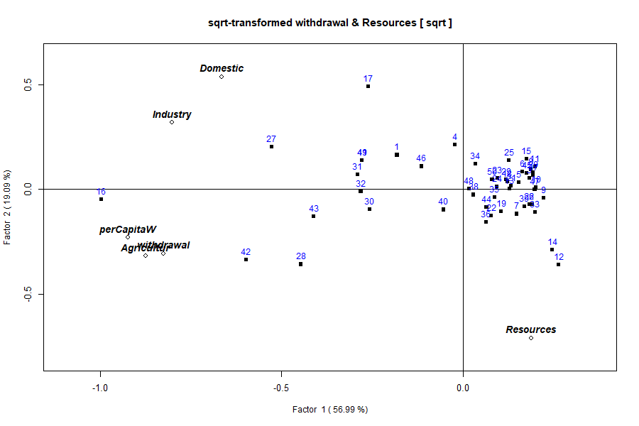
withdrawal and
Resources only (via t=). The overall structure
is unchanged; the transform pulls in the right tails of the two named
variables without touching the others.What t= does, and when to prefer it.
scale="log" and scale="sqrt" transform
every variable before scaling — a blunt instrument when only a
couple of columns are skewed. t= is the targeted
alternative: it applies a square-root transform to the named
columns only, leaving the rest untouched, then proceeds with
the usual scale="sd" standardisation. For a column
the value used becomes
,
which compresses a long right tail (a variable spanning 0–800 is pulled
into 0–28). Prefer t= when only a few variables
are skewed and the others are already well-behaved — the situation here,
where withdrawal and Resources have the
heaviest tails; reach for global
scale="log"/"sqrt" only when all
variables share the same skew. Because a transform reshapes the
correlation structure, it moves the eigenvalues (compare the sqrt fit’s
3.42 / 1.15 / 0.89 with the default
3.36 / 1.08 / 0.91). Note, though, that it does
not rescue the near-zero sixth eigenvalue: that
collapse comes from the Agricultur ≈
perCapitaW collinearity (Section 6), and neither of
those columns was transformed here — to fix it you would drop or
combine that pair, not transform
withdrawal/Resources.
14. Principal coordinate analysis (PCoA)
When to use it. PCoA (also called classical or metric MDS) ordinates observations from a distance matrix rather than from the raw variables. That is its whole point: it answers “how do the samples spread out, given a chosen measure of dissimilarity?” On ordinary Euclidean distance PCoA is mathematically identical to PCA, so on this continuous water data the coordinate view simply re-expresses the ordination you already have. Reach for PCoA in earnest when your dissimilarity is not plain Euclidean — a Gower distance for mixed numeric/categorical data, a Bray–Curtis distance for ecological counts, a road-network distance between places — because PCA cannot start from those, and PCoA can.
type="coord" (aliases "coordinate",
"pca2") draws this view. Choose any pair of axes with
factors=:
The PCoA equation (classical scaling; Gower, 1966). From a matrix of squared distances (entries ), double-centre it and eigen-decompose the result:
The principal coordinates are — the sample positions. When the distances are Euclidean, is (up to scaling) the same cross-product matrix PCA decomposes, which is why the two coincide here. Symbols match the rest of the manual: are eigenvalues, eigenvectors, the sample count.
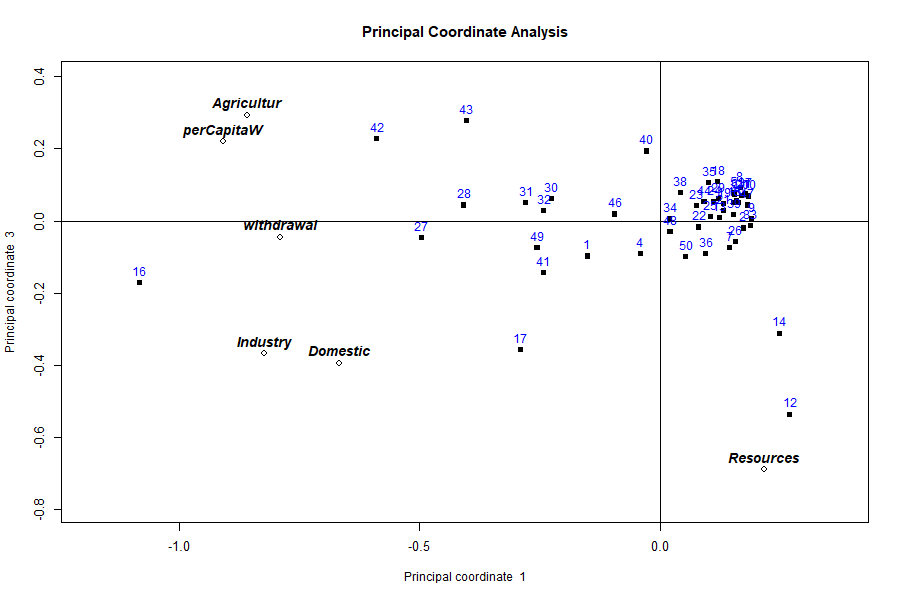
Interpretation. The country spread is the same one Section 9’s biplot shows — Egypt and the big abstractors pulled to one side, the water-rich Congo and DR Congo isolated, the small economies bunched at the centre — because Euclidean PCoA is PCA here. The value of running it is methodological: it confirms the ordination is distance-driven, and it is the entry point for the non-Euclidean distances a real mixed-data study would need.
15. Multidimensional scaling (MDS)
When to use it. MDS also places samples in a low-dimensional map from a dissimilarity matrix, but non-metric MDS asks a softer question than PCoA: it preserves only the rank order of the dissimilarities, not their exact magnitudes. Use it when you trust that “A is more similar to B than to C” but do not trust the numeric size of the gaps — ordinal or noisy dissimilarities, perceptual/rating data, anything where monotonicity is safer than linearity. It trades exactness for robustness to the distance scale.
MDS is drawn with type="mds", conventionally on the
centred/√n scale (scale="n") so the axes reflect raw
dissimilarity:
The MDS objective (Kruskal, 1964). MDS searches for sample coordinates whose map distances best reproduce the target dissimilarities , by minimising stress:
Lower stress = a truer map; in non-metric MDS the are a monotone (rank-preserving) transform of the original dissimilarities, which is what makes the method ordinal rather than metric.
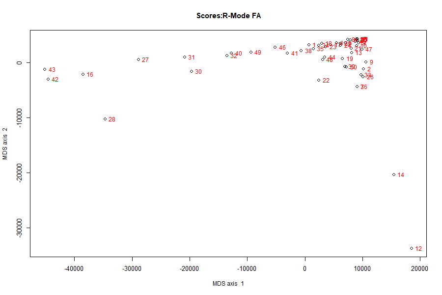
Interpretation. On the covariance scale the axis
range runs to tens of thousands — that is expected, because the
dissimilarities are in the original water-use units, not
standardised. The map therefore exaggerates the few enormous abstractors
(Egypt, Sudan) and squeezes the many small users into a tight cloud; it
is a picture of raw magnitude similarity. Switch to
scale="sd" if you want the standardised, correlation-based
spacing instead.
15b. Correspondence analysis view (type="ca")
When to use it. Correspondence analysis (CA) is the ordination built for frequency and categorical data — a contingency table of counts (rows × categories). It measures similarity with the chi-square distance, which weights each category by how common it is, and it places rows and columns on shared axes so you can read which categories characterise which rows. That is a different job from R/Q-mode factor analysis, which is built for continuous variables.
The CA equation (chi-square decomposition; Greenacre, 1984). For a table with relative frequencies , row masses and column masses , total inertia is the chi-square statistic over :
CA is the singular-value decomposition of the standardised residuals — the departures from independence, weighted by mass. Its axes maximise that inertia, exactly as PCA’s axes maximise variance.
In qrfactor, type="ca" presents the
simultaneous Q/R eigen-biplot under correspondence-analysis axis labels
— a correspondence-style ordination of your data, read the same way as
the biplot in Section 9 (variables and countries on shared axes,
proximity = association):
plot(mod, type = "ca")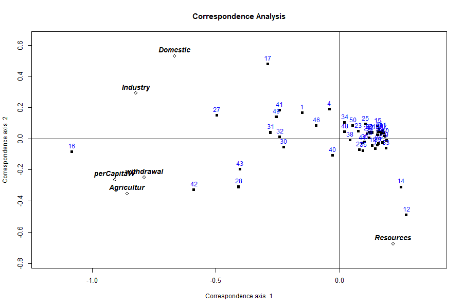
Interpretation and scope. On this continuous water
table the CA view gives a valid ordination — the same
use-versus-resource split, now framed as a correspondence layout. Where
it becomes the right tool rather than an alternate label is
when your data are genuinely a table of counts or categories: species ×
site abundances, respondent × answer tallies, land-cover class ×
district. For that case the chi-square formulation above is what you
want, and you have two clean routes: dummy-code /
tabulate your categories into counts and feed the numeric table
to qrfactor(), or use a dedicated CA implementation such as
MASS::corresp or the ca package. Section 5b
makes the same point in brief; the choice is about matching the distance
(chi-square vs Euclidean) to the data (counts vs continuous).
PART 2 — Spatial mode
Reading Part 2 on its own. This part takes the same analysis to a map and can be read without Part 1. Five terms are all you need:
- R-mode classifies variables (which measurements move together); Q-mode classifies observations (which places resemble one another).
qrfactorcomputes both at once.- A factor is an underlying axis of variation extracted from the data. Here Factor 1 = overall water use and Factor 2 = renewable resource availability — the two axes almost all the variation falls along.
- A loading measures how strongly a variable (R-mode) or a place (Q-mode) relates to a factor; large magnitude means it defines that axis.
- A score is the coordinate a place takes on a factor — the per-place number you map, rank or cluster. An index is that score rescaled to 0–1.
- An eigenvalue is how much variation a factor captures; Factor 1 captures the most.
For the full derivation and equations see Sections 6–11; nothing below depends on having read them.
16. From table to map
Part 1 produced one row of scores per country. But these are
places, and the natural last step is a map. Give
qrfactor() a shapefile instead of a table and it does the
identical analysis, then writes every score, rank, index and cluster
back onto the map’s attribute table — ready to draw. The statistics are
unchanged; only the container gains geometry.
17. Reading a shapefile
What a shapefile is. A shapefile is the
most common file format for vector map data. Despite the singular name
it is really a small bundle of files sharing one base name —
Africanfreshwater.shp (the geometry: the polygon outline of
each country), .dbf (the attribute table:
one row of data per polygon, exactly like a spreadsheet),
.shx (an index), and usually .prj (the
coordinate reference system). You point qrfactor() at the
folder that holds them and name the layer (the shared
base name, no extension):
source <- system.file("external", package = "qrfactor") # the folder
smod <- qrfactor(source, layer = "Africanfreshwater", var = var)
class(smod$gisdata)
#> [1] "SpatialPolygonsDataFrame"
nrow(smod$gisdata)
#> [1] 50What happens under the hood (you do not have to
manage any of it). The shapefile is read by sf::st_read() —
sf (“simple features”) is the modern R package for reading
vector geometry — which returns a table where one column holds each
country’s polygon. qrfactor then converts that to an older
sp SpatialPolygonsDataFrame, the object type
its mapping code (sp::spplot) expects. Both are just “a
data table with a geometry column attached”: the 50 rows are the 50
countries, the ordinary columns are the water variables, and one special
column is the shape. The analysis runs on the ordinary columns; the
geometry rides along so the results can be drawn. No prior GIS
experience is needed — if you can read a CSV, smod$gisdata
is the same thing with a map glued on.
18. Scores written back to the attribute table
Because p="Yes" by default, the fit appends its results
to the attribute table. The six input variables become 41
columns:
names(as.data.frame(smod$gisdata)) [1] "ID" "CODE" "COUNTRY" "Year" "Domestic" "Industry" "Agricultur"
[8] "Population" "Resources" "withdrawal" "perCapitaW" "perCapitaR"
[13] "cluster" "means" "meanrank1" "meanindex1"
[17] "Factor1" "rank1" "index1" "cluster1"
[21] "Factor2" "rank2" "index2" "cluster2" ... (Factor3..6, etc.)
[41] "index"Why this matters. Writing the results back onto the attribute table is what makes the maps possible: once each country’s score, rank, index and cluster sits in the same table as its polygon, drawing a choropleth is a one-liner — no manual joining, no risk of misaligning rows. The analysis is computed once and reused by every downstream map.
What the ~41 columns are, in plain language:
-
Originals (
ID,CODE,COUNTRY,Year, and the eight source variables) — carried through unchanged from the shapefile. -
Per-factor results, one set per retained factor.
For Factor 1:
Factor1is the Q-mode score (where the country sits on the axis),rank1its rank among the 50,index1that rank rescaled to 0–1 (1 = highest), andcluster1the k-means group it fell in on that factor. The same four repeat asFactor2/rank2/index2/cluster2, and so on for each factor. -
Overall summaries:
means(the country’s average across the scaled variables),meanrank1,meanindex1, an overallclusterfrom the mean, and a final combinedindex.
Indices exist because raw scores are awkward to map — they run
negative-to-positive around zero — whereas a 0–1 index gives an
intuitive low→high colour ramp. Here index1 reads as a
Water-Use index and index2 as a
Water-Availability index of Africa.
A worked row (Algeria) confirms the join and shows how to read it:
gd <- as.data.frame(smod$gisdata)
gd[gd$COUNTRY == "Algeria",
c("COUNTRY","Domestic","Factor1","Factor2","index","means","cluster")]
#> COUNTRY Domestic Factor1 Factor2 index means cluster
#> 1 Algeria 37.66227 -0.276737 0.170291 0.78 60 2Reading Algeria. Its Factor1 score is
−0.277 — negative, so Algeria sits on the
heavy-use side of the water-use axis (Section 7: negative
Factor 1 = more use), though only moderately. Its Factor2
is +0.170, the lower-resource side. Its
combined index of 0.78 (on 0–1) puts it
high on overall water pressure, and it falls in cluster
2. Crucially, that Factor1 of −0.277 is
identical to the value the non-spatial model produced in Part 1
— same analysis, new container. (The cluster number itself is
an arbitrary label; see the caveat.)
Caveat — cluster ids are arbitrary labels. The
cluster*columns come fromkmeans(), whose starting points are random and not seeded. The grouping is stable but the numbers (which group is “1” vs “2”) can swap between runs — Algeria wascluster 1in one run andcluster 2in the next. Loadings, scores, eigenvalues and indices are fully deterministic. If you need reproducible cluster ids, callset.seed()beforeqrfactor().
19. plot="map": the choropleths
A choropleth is a map that colours each area by the
value of a variable — darker or warmer for higher. Because the scores
and indices already sit on the attribute table (Section 18),
qrfactor can draw a whole series of them from one call:
plot(smod, plot = "map")This first redraws the Q/R biplot, then streams
sp::spplot choropleths: the input variables together, the
scaled variables, each variable on its own, the factor scores, the
factor indices, the means, and the cluster maps.
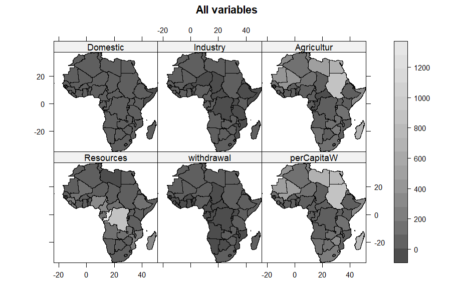
Agricultur, withdrawal and
perCapitaW shade the same regions dark;
Resources shades a different region, the equatorial
belt.Reading the variable maps. The panels for
Agricultur, withdrawal and
perCapitaW light up the same places — the arid
north (Egypt, Sudan, Libya) and a handful of heavy irrigators — because
those variables are strongly correlated (Section 6): they are three
views of one underlying “water use” pattern. Resources, by
contrast, lights up a different map — the humid equatorial belt
(Congo, DR Congo) — visual confirmation that availability and use are
decoupled. Domestic and Industry pick out the
more developed economies.
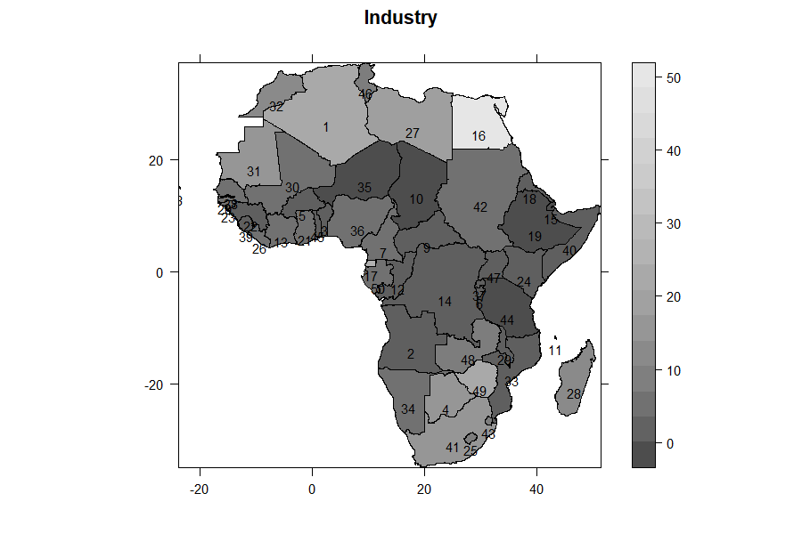
Reading a factor-index map. On its own each index’s
geography is clearer: the index1 (Water-Use) map is dark
across North Africa and the Sahel and pale over Central Africa; the
index2 (Water-Availability) map is nearly its negative.
Laid side by side, the two indices are the paradox drawn onto
the continent: the places that use the most water are rarely the places
that hold the most.
20. Clustering: plot="cluster" and
"compare"
What clustering does, from first principles. So far
the analysis has ordinated the countries — spread them along
continuous factors. Clustering takes the next step: it sorts them into a
small number of discrete groups. qrfactor
uses k-means, which works like this: choose k
group centres, assign each country to its nearest centre, move each
centre to the average position of its members, and repeat until nothing
moves. The outcome minimises spread within groups and maximises
the difference between them. By default qrfactor
asks for two groups (change with
nfactors=).
plot(smod, plot = "cluster")plot="cluster" runs k-means on the scores and draws two
diagnostics; plot="compare" additionally contrasts the
mean-based and factor-based groupings.
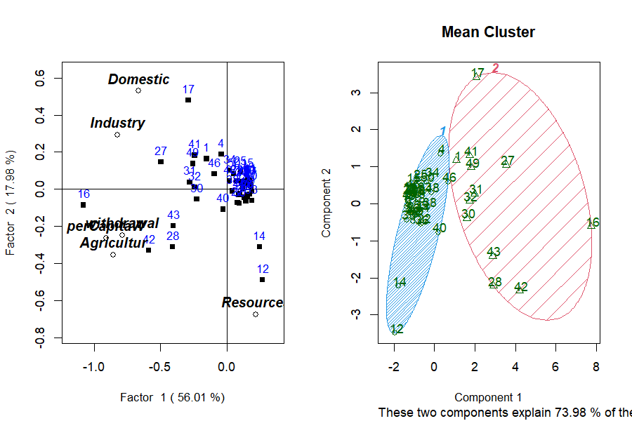
How to read the cluster plot (clusplot). Each point is a country, plotted on the first two principal components of the clustering variables; a shaded hull is drawn around each group’s members. Points inside one hull were placed in the same cluster; well-separated hulls mean a clean split, overlapping hulls a fuzzy one. The caption “these two components explain 73.98% of the variability” says how much of the multivariate spread this flat picture captures — high here, so the 2-D view is trustworthy. “Component 1 / Component 2” are simply those two summary axes (essentially Factor 1 and Factor 2 again).
Is the split real? (pvclust). k-means
will always return groups, even from noise, so
qrfactor also runs pvclust,
which repeatedly re-samples the data (a bootstrap) and
re-clusters to see how often the same groups reappear. It reports a
support percentage per cluster: high support means the grouping is
stable, not an artefact of one particular sample. Trust a cluster with
high bootstrap support; treat one with low support as tentative.
21. Testing the clusters: ANOVA and Kruskal–Wallis
plot="anova" (parametric) and
plot="nonparametric" (Kruskal–Wallis) test whether the
variables differ across the clusters the analysis produced — the formal
check that the grouping is real. For the two mean-clusters, each
variable is tested in turn:
ANOVA Table Domestic for 2 Mean clusters
Df Sum Sq Mean Sq F value Pr(>F)
cluster 1 16249 16249 48.79 7.76e-09 ***
Residuals 48 15987 333
Kruskal-Wallis: Domestic by cluster
chi-squared = 22.539, df = 1, p-value = 2.06e-06How to read the ANOVA table. ANOVA (analysis of
variance) asks: are the group means far enough apart that the split
is unlikely to be chance? Column by column — Df is
degrees of freedom (1 for the cluster effect, 2 groups − 1;
48 for the residual, 50 − 2); Sum Sq
divides the total variation into the part explained by the clusters
(16249) and the part left over within them (15987);
Mean Sq is Sum Sq ÷ Df; F value is the
ratio of between-group to within-group variance (48.79) — a large F
means the groups are far apart relative to their internal scatter; and
Pr(>F) is the p-value (7.76e-09), the chance of an F
this large if the groups truly shared one mean. Below 0.05 is
significant; the *** marks p < 0.001.
Why Kruskal–Wallis as well? ANOVA assumes each group is roughly normal. Water data are heavily right-skewed (Section 22), which can make ANOVA’s p-values optimistic. Kruskal–Wallis is the non-parametric counterpart: it works on the ranks of the values, not their raw magnitudes, so it assumes no particular distribution. When the two agree — here ANOVA p = 7.8e-09 and Kruskal–Wallis p = 2.1e-06 — the separation is trustworthy, not an artefact of skew.
Domestic, Industry, Agricultur, withdrawal and perCapitaW all
separate the two clusters at p < 0.001;
Resources does not (F = 0.90, p = 0.35).
That single exception is the whole story. The clusters were built from
the use variables, which correlate with one another but not
with resources (Section 6), so the two groups differ enormously in how
much water they use and barely in how much they have.
Resources refusing to separate the clusters is not a
weakness of the test — it is the paradox, restated as a
hypothesis test: the grouping is defined by consumption, not
endowment.
The two African water profiles. The cluster means
(plot="cluster" also prints these) name the groups:
Table 3: Mean water-use profile of the two clusters — heavy users draw far more across every use variable yet hold less than half the renewable resource.
| Variable | Cluster A (light users) | Cluster B (heavy users) |
|---|---|---|
| Domestic | 10.7 | 52.9 |
| Industry | 3.3 | 17.6 |
| Agricultur | 56 | 448 |
| withdrawal | 1.2 | 14.1 |
| perCapitaW | 70 | 519 |
| Resources | 128 | 59 |
Cluster B — the heavy users (Egypt, Sudan, Libya, Mali, South Africa, Morocco…) — withdraws roughly 8× more agricultural water per country than Cluster A, yet sits on less than half the renewable resource (59 vs 128). Cluster A — the light users — is the water-rich majority. This is the paradox measured on the ground: the countries drawing down the most water are, on average, the least well supplied. The analysis has turned a rhetorical claim (“water-rich yet water-stressed”) into two quantified groups a policymaker can name and map.
22. Distributional diagnostics: type="diagnose"
Before trusting a factor analysis it is worth checking the
shape of the data, because the method assumes roughly linear,
not wildly skewed, relationships. type="diagnose" draws a
histogram (with a fitted normal curve) for every variable, a χ² Q–Q plot
of Mahalanobis distances, and flags multivariate outliers with
mvoutlier::aq.plot:
plot(smod, type = "diagnose")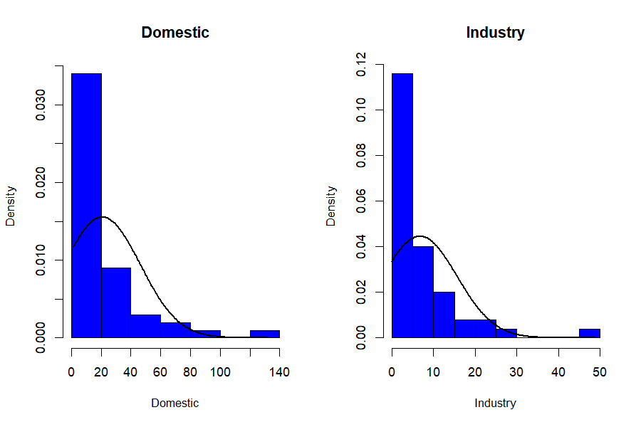
What the histograms tell you, and why it matters.
Almost every water variable is strongly right-skewed:
most countries sit at low values while a few enormous outliers (Egypt’s
withdrawal, Congo’s resources) stretch a long right tail. This matters
concretely. First, Pearson correlation — the engine of the whole
decomposition (Section 6) — measures linear association, and a
few extreme values can distort it, so the factors partly chase the
outliers. Second, skew undermines the normality ANOVA assumes (Section
21) — precisely why the Kruskal–Wallis cross-check matters. The
practical response is Section 13’s transforms: global
scale="log"/"sqrt", or t= on the
worst offenders, pull in the tails and give the correlations a fairer
footing.
Reading the Q–Q / outlier panel. The χ² Q–Q plot of
Mahalanobis distances should fall on the diagonal if the data are
multivariate-normal; points that peel away in the upper right are
candidate multivariate outliers, which aq.plot then maps.
The countries flagged (the arid heavy-users, the water-rich giants) are
not errors to delete but genuine extremes to keep in mind when reading
the factors.
Caveat — collinearity. The Mahalanobis/outlier panel inverts the covariance matrix. In this dataset
AgriculturandperCapitaWare almost the same variable (correlation 0.992), which makes that matrix singular.qrfactornow catches this: it draws the histograms, skips the multivariate-normality panel, and prints a warning telling you to drop or combine the near-duplicate variables — instead of failing outright. For a clean outlier panel, rundiagnoseon a non-collinear subset, e.g. dropperCapitaW.
22b. Can we see loadings on a map?
A natural question once everything else is mapped: can we map the
loadings too? The answer draws a useful line.
Loadings are properties of variables, not of
places — “Agricultur loads −0.86 on
Factor 1” is a statement about the variable, not about Egypt or Ghana.
There is nothing per-country to colour a map with, so the natural home
of the R-mode loadings is the biplot (Section 7), not the map.
What does map is anything indexed by place — the
Q-mode scores, and the indices and
cluster ids derived from them (Section 18). Each is one
number per country, so it colours a polygon naturally. That is why Part
2 maps Factor1, index1 and
cluster1 but never “the loadings”: scores and indices are
geographic, loadings are not. Want the variables’ structure?
Read the biplot. Want the countries’ structure? Map the scores.
The bridge between them is Eq. 7–8: a country’s score is built
from the loadings, so the map and the biplot are two views of
one decomposition.
22c. Point maps vs. choropleth maps
Part 2’s workflow produces choropleths — polygons (countries) shaded by value — because the bundled data are area data: one value per country. But not all spatial data is polygon-shaped. Many studies collect point data: a GPS reading at each borehole, weather station, household or market stall. Those are drawn not as shaded areas but as points at coordinates, often sized or coloured by value.
Point data gives you two routes. Aggregate it to
areas first — average the boreholes within each district, join to a
district shapefile, and run the choropleth workflow above — or keep the
points and plot the qrfactor scores at their coordinates,
e.g. with sp::spplot on a
SpatialPointsDataFrame, or with sf plus
ggplot2::geom_sf(). The analysis is identical
either way; only the final drawing differs. Several Part 4 projects (the
borehole water-quality survey, the market-vendor livelihoods survey) use
point data and take the plot-at-coordinates route — a preview of how the
same method serves both area and point studies.
23. Joining a CSV to a shapefile
If your measurements live in a CSV and your geometry in a shapefile,
join them in the call with m= (the shared key column) and
f= (the CSV path):
mjoin <- qrfactor(source, layer = "Africanfreshwater",
var = var, m = "COUNTRY", f = csv)The CSV rows are matched to features by COUNTRY,
combined (row alignment is preserved by the internal
spCbind replacement), and the analysis proceeds as if the
data had been in the shapefile all along.
24. Using an in-memory spatial object
You can also hand qrfactor() a spatial object you
already have in the session — set layer="gisobject":
24b. The African water paradox, in numbers
Pulling the whole analysis together — every figure here came from one
qrfactor() call on the bundled data:
Table 4: The African water paradox, in numbers — the whole analysis at a glance.
| Question | What qrfactor answered |
|---|---|
| How many axes matter? | Two (Kaiser): 56% + 18% = 74% of the variation |
| What is Factor 1? | The scale of water use, driven by agriculture (loadings −0.79 to −0.91) |
| What is Factor 2? | The resource-vs-use contrast
(Resources alone, loading −0.68) |
| Is use tied to availability? |
No — Resources correlates −0.04 to
−0.19 with every use variable |
| Which variable is redundant? |
perCapitaW ≈ Agricultur (r =
0.992); the 6th eigenvalue ≈ 0 |
| Who uses the most? | Egypt, Sudan, Madagascar, Libya, Mali, Mauritania, Swaziland |
| Who has the most water? | Congo, DR Congo — and they barely use it |
| Do the groups differ? | Heavy vs light users separate at p < 1e-6 on use, not on resources |
| The paradox | Heavy users hold 59 units of resource on average; light users 128 |
The methodological point for the applied reader: one call did the work of a PCA, an R-mode factor analysis, a Q-mode classification, a cluster analysis, an ANOVA and a set of maps — and, because it is map-first, the conclusion is not a table but a picture of the continent. A worked write-up of exactly this analysis is a natural applied paper.
On causation. These are associations in a
single cross-section of 50 countries, not a causal claim. The decoupling
of use from availability is real in these data, but explaining it
(climate, economy, irrigation policy, data year) is the domain expert’s
job, not the factor model’s. qrfactor locates the pattern;
it does not explain it.
24c. What makes qrfactor robust
The package is designed so an applied user rarely gets stuck:
- Pure-R core. The whole analysis — correlation/covariance, eigen-solve, loadings, scores, indices — is base R. No compiled code, no build tools, and it installs and runs anywhere R does.
-
Graceful degradation. When a diagnostic can’t run —
for example the Mahalanobis/
mvoutlieroutlier panel on collinear data, where the covariance matrix is singular — the plot method now skips that one panel with a clear warning and continues, instead of aborting the whole figure (Section 22). You get the histograms and the message, not a stack trace. -
Dependency resilience. The spatial stack it
originally relied on (
rgdal,maptools,mgraph) was retired from CRAN.qrfactor1.5 replaces them with a thinsf/spcompatibility layer: shapefiles are read withsf, drawn withsp, and the conversion is automatic — so the package survives the modern R geospatial ecosystem rather than dying with its old dependencies. - Five ways in, one analysis out. Data frame, CSV/text file, ESRI shapefile, an in-memory spatial object, or a live CSV↔︎shapefile join — the same method regardless of how your data arrives (Section 5, Section 17, Section 23, Section 24).
- One object, many views. Every quantity is stored on the returned object and, for spatial input, written back onto the map’s attribute table (Section 18), so downstream plots and maps never recompute the analysis.
-
Modern-R hardened. Under R ≥ 4.2 a logical
condition of length > 1 is an error, not a silent first-element take.
The constructor and the ~1700-line plot method were swept for this, so
documented argument forms — a vector of variables in
t=, a numericxlim/ylim, string axis shortcuts, customabline— all work instead of crashing.
None of this changes the statistics; it changes how often the statistics actually reach you. That is what “robust” means here: the method is classical; the packaging is defensive.
PART 3 — Reference
25. qrfactor() argument reference
qrfactor(source, layer='', var=NULL, type='', p="Yes",
scale="sd", t='', nf=2, m=NULL, f=NULL, ...)Table 5: qrfactor() arguments.
| Arg | Meaning |
|---|---|
source |
data frame, CSV/txt path, shapefile folder, or spatial object |
layer |
shapefile layer name; "gisobject" for an in-memory
object; a filename for CSV/txt |
var |
character vector of variable (column) names to analyse — must be numeric |
type |
analysis flavour carried to plot
(e.g. "mds", "coord"); usually set on
plot()
|
p |
"Yes" (default) writes scores/clusters back to the
attribute table |
scale |
"sd" (default, correlation), "normal",
"n", "centre", "data",
"log", "sqrt"
|
t |
character vector of variables to transform
(e.g. c("withdrawal","Resources")) |
nf |
number of factors for clustering (default 2) |
m, f
|
join key column and CSV path for CSV↔︎shapefile joins |
26. plot.qrfactor() argument reference
plot(x, factors=c(1,2), type="loading", plot="",
cex="", pch=15, pos=3, main="", xlim="optimise", ylim="optimise",
abline=TRUE, legend="topright", legendvalues=c(100),
values=FALSE, nfactors=3, rowname=TRUE, par=c(1,2), ...)-
type— what to draw. The full set:typeDraws "loadings"(default)the Q/R loadings biplot "scores"factor scores instead of loadings "pca"/"PCA"PCA (eigenvector) loadings — matched case-insensitively, either case works "coord"/"coordinate"principal-coordinate view (≡ PCA on Euclidean data) "mds"multidimensional-scaling view (use with scale="n")"ca"/"correspondence"the correspondence-analysis biplot of the eigen-structure (Section 5b and the CA section) "diagnose"histograms + Q–Q + multivariate outliers "cluster"clusplot+pvclustcluster diagnostics plot— which panels:""(combined),"r","q","qr","all","map","cluster","compare","anova","nonparametric".factors— the two axes to draw, e.g.c(1,2),c(1,3).rowname— a column name to label points (e.g."COUNTRY").cex— magnify text, or a variable name to size points by a variable.values—TRUE, or a variable name, to annotate points with values.xlim/ylim—"optimise"(auto), numericc(lo,hi), or the shortcuts"r"/"q"/"qr".abline—TRUEfor reference axes, orc(intercept, slope).
plot(mod, factors = c(1,3)) # other axes
plot(mod, xlim = c(-1.5,1.5), ylim = c(-1.5,1.5)) # fixed limits
plot(mod, cex = c("withdrawal"), values = TRUE, pch = 23) # size + annotate
plot(mod, abline = c(-0.5, 0.5)) # custom reference line
plot(mod, rowname="COUNTRY", cex=c("withdrawal"), # the full-dress plot
legend="topleft", values=TRUE, pch=23)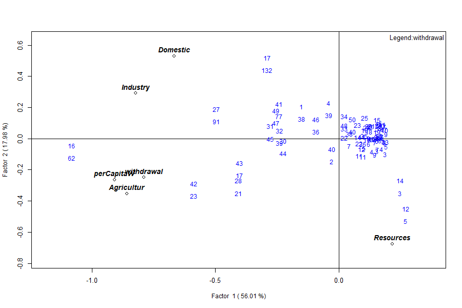
withdrawal, annotated with values, drawn with a custom
symbol (pch=23) and a top-left legend.27. The object’s elements
Table 6: Elements of the fitted qrfactor
object.
| Element | Class | Dim |
|---|---|---|
gisdata |
data.frame / Spatial | 50 × 41 (spatial) |
correlation |
matrix | 6 × 6 |
eigen.value / eigen.vector
|
numeric / matrix | 6 / 6×6 |
r.loading (rloading,
rloadings) |
matrix | 6 × 6 |
q.loading (qloading,
qloadings) |
matrix | 50 × 6 |
combined.loadings / loadings
|
matrix | 56 × 6 |
r.scores / q.scores /
combined.scores / scores
|
matrix | 50×6 / 6×6 / 56×6 |
pca (pca.loadings) /
pca.scores
|
matrix / df | 6×6 / 50×6 |
variance / cumvariance
|
numeric | 6 |
x.standard |
matrix | 50 × 6 |
data |
data.frame | 50 × 6 |
variance, normal, transform,
nfactors, call
|
metadata | — |
28. Reproducing the figures
Every table and figure here comes from
reproduce_manual.R in this folder:
source("reproduce_manual.R")
# writes repro_output.txt and figures/*.pngIt exercises all five input modes, all six analyses, every
scale/type/plot option, the
print/summary/plot methods, the spatial maps, the diagnostics and the
join — and logs each figure ok/FAIL.
29. Glossary
- Loading — weight relating a variable (R-mode) or sample (Q-mode) to a factor.
- Score — a sample’s/variable’s coordinate on a factor.
- Eigenvalue — variance captured by an axis; Kaiser rule keeps > 1.
- R-mode / Q-mode — classification of variables / of samples.
- Biplot — variables and samples on one set of axes.
- PCoA — principal coordinate analysis; ordination from distances.
- MDS — multidimensional scaling; a similarity map.
- Choropleth — a map coloured by a variable’s value per area.
-
clusplot —
cluster’s ordination plot with group hulls. - Mahalanobis distance — multivariate distance used for outlier detection.
30. Exercises
-
Retention. From
mod$eigen.value, how many factors pass the Kaiser rule? What cumulative variance do they carry? (Answer: two; 74%.) -
Scaling. Run
qrfactor(csv, var=var, scale="data")and comparevarianceto the default. Why does Factor 1 jump to ~99%? (Covariance scale lets the largest-magnitude variable dominate.) -
Collinearity. Drop
perCapitaWfromvarand refit. What happens to the smallest eigenvalue, and doestype="diagnose"now draw the outlier panel? (The near-zero eigenvalue lifts; the covariance matrix is no longer singular, so the panel renders.) -
Spatial. Fit the shapefile model, then map
index2for every country by colouringsmod$gisdata$index2. Which countries top Factor 2? -
Reproducibility. Add
set.seed(1)before the shapefile fit and confirm theclusterids are now stable across two runs.
PART 4 — Projects
This part turns the manual into coursework. Each project reruns the same method you learned in Parts 1–2 on a new dataset, so a student can go from raw data to a mappable, publishable result by following the section references back to the worked water example. The projects are pitched at MPhil and PhD Geographers first, but reach into economics, earth science and public health so that both spatial and non-spatial designs are covered. Assign one per student.
33. The project brief template
Every project below follows this eight-part structure. Read it once; each project then fills in its specifics.
- Research question — the one- or two-sentence question the analysis answers.
- Data source — a named, citable dataset with a working link, and the join key if the work is spatial.
-
Variable selection table — map each of your
variables onto the role a water-example variable played:
e.g. your dominant, skewed driver plays the
Agriculturrole; a pair that rise together plays theDomestic/Industryrole; a variable expected to be independent of the others plays theResourcesrole; avoid two near-duplicates (theAgricultur≈perCapitaWtrap, Section 6). -
Step-by-step — load your table as in Section 4; fit
with
qrfactor()as in Section 5, swapping your ownvar=vector; read R-mode (Section 7), Q-mode (Section 8) and the biplot (Section 9); scale/transform as needed (Sections 12–13); for spatial work, fit the shapefile (Section 17), map (Section 19), cluster (Section 20) and test (Section 21). - Expected output shape — what your eigenvalue table, loadings and biplot should structurally resemble, so you can sanity-check (e.g. “one dominant factor + one near-independent variable on Factor 2”).
-
Interpretation checklist — Which variables load
together on Factor 1? Does one variable dominate the way
Resourcesstood apart? Do your R-mode and Q-mode groupings tell the same story or different ones? Which observations are the extremes, and do the clusters separate on use-type variables but not on the independent one (Section 21)? -
Spatial extension — Mandatory / Optional–encouraged
/ Not applicable (with reason), plus the join key, shapefile source,
preprocessing,
qrfactor()input mode, and which maps to produce. A few projects are deliberately non-spatial or point-based — that is by design, not an oversight. - Deliverable — a short paper (Introduction / Data / Method / Results / Discussion) modelled on this manual’s own prose, of a standard that could be submitted to a journal.
Common data portals used below: GADM (admin boundaries) https://gadm.org; Natural Earth https://www.naturalearthdata.com; GADM/GSS Ghana boundaries via the Ghana Statistical Service https://www.statsghana.gov.gh and Ghana Open Data https://data.gov.gh; HydroSHEDS/HydroBASINS https://www.hydrosheds.org; WorldPop https://www.worldpop.org; USGS EarthExplorer (Landsat) https://earthexplorer.usgs.gov.
34. Geography and spatial-core projects
Project 1 — Regional development typology (Ghana
districts). Question: how do Ghana’s districts group
by a bundle of development indicators? Data: district
indicators from the Ghana Statistical Service https://www.statsghana.gov.gh (2021 PHC / district
league tables), joined to GADM level-2 https://gadm.org. Variables → roles: literacy,
electricity access, piped water, employment rate, asset ownership —
expect one dominant “development” factor (the Agricultur
role) plus a variable that stands apart (e.g. an agrarian-livelihood
share in the Resources role). Spatial:
Mandatory; join key = district name/code.
Deliverable: a district-typology paper with a development-index
choropleth.
Project 2 — Urban land-surface-temperature drivers.
Question: what surface characteristics co-vary with urban heat
across city wards? Data: Landsat NDVI, land-surface temperature
and built-up fraction from USGS EarthExplorer https://earthexplorer.usgs.gov (or Google Earth Engine),
summarised per ward. Preprocessing: a
zonal-statistics step — average each raster within each
ward polygon before the join. Variables → roles: built-up % and
LST rise together (Domestic/Industry role);
NDVI (vegetation) opposes them (Resources role).
Spatial: Mandatory; join key = ward id;
boundaries from the city authority or GADM level-3.
Deliverable: an urban-heat-driver paper with an LST hotspot
map.
Project 3 — Flood vulnerability index (ties to
floodflow). Question: which catchments
are most flood-vulnerable, and on what combination of factors?
Data: rainfall (CHIRPS), elevation/slope (SRTM), drainage
density and land cover, per catchment; catchments from HydroBASINS https://www.hydrosheds.org or a national basin
authority. Variables → roles: rainfall + drainage density +
impervious cover load together (Agricultur role);
elevation/relief stands apart. Spatial:
Mandatory; join key = basin id. Cross-link:
feed discharge from the floodflow package as an extra
variable. Deliverable: a catchment vulnerability paper with a
ranked index map.
Project 4 — Water access and quality profiling (borehole
points). Question: how do sampling points group by
water-quality signature? Data: borehole/well point samples (pH,
EC, TDS, nitrate, fluoride, turbidity) — a classic hydrochemistry
qrfactor use. Variables → roles: EC/TDS/hardness
co-vary (the correlated cluster); a contaminant such as fluoride may
stand apart (Resources role). Spatial:
Optional–encouraged, point-based — either aggregate to
districts for a choropleth, or plot scores at GPS coordinates (Section
22c). Deliverable: a groundwater-quality typology paper.
35. Economics and livelihoods projects
Project 5 — Poverty and living-standards typology.
Question: how do households (or districts) group by
living-standard indicators? Data: Ghana Living Standards Survey
/ World Bank LSMS https://www.worldbank.org/en/programs/lsms.
Variables → roles: expenditure, asset index, education, housing
quality load together; a distinct dimension (e.g. remoteness or
agricultural dependence) plays the Resources role.
Spatial: Optional — a fully valid
non-spatial household-level design, or aggregate to enumeration
areas for a choropleth. Deliverable: a living-standards
typology paper.
Project 6 — Afrobarometer governance-and-trust analysis. Question: how do countries (or regions) group on governance perceptions? Data: Afrobarometer https://www.afrobarometer.org (trust in institutions, perceived corruption, service delivery, democracy support), aggregated to country or region. Variables → roles: trust items co-vary; a contrasting attitude (e.g. tolerance of authoritarian rule) stands apart. Spatial: Mandatory; GADM level-0 (countries) or level-1 (Ghana regions). Deliverable: a governance-typology paper with a trust-index map.
Project 7 — Informal-sector / market-vendor livelihoods (primary data). Question: how do vendors group by livelihood profile? Data: you collect it — a structured survey (income, stock value, hours, credit access, dependents) with a GPS point per stall. Variables → roles: income/stock/hours co-vary; credit access may stand apart. Spatial: Optional–encouraged, point-based, no shapefile needed — plot scores at GPS points (Section 22c). This is the project where students generate their own spatial data. Deliverable: a livelihoods paper with a point-map of vendor types.
Project 8 — Financial-inclusion mapping. Question: how do regions group by access to financial services? Data: Global Findex https://www.worldbank.org/en/publication/globalfindex and/or Bank of Ghana / mobile-money statistics, by region. Variables → roles: account ownership, mobile money, bank branches, ATM density co-vary; a distinct dimension (e.g. borrowing vs saving) stands apart. Spatial: Mandatory; GSS or GADM level-1, CSV↔︎shapefile join (Section 23). Deliverable: a financial-inclusion typology with an access-index map.
36. Earth-science and environment projects
Project 9 — Soil-fertility classification. Question: how do sampling sites group by soil chemistry? Data: soil survey points (N, P, K, pH, organic carbon, CEC). Variables → roles: nutrient cations co-vary; pH or a contaminant stands apart. Spatial: Optional–encouraged — aggregate to district for a choropleth. Deliverable: a soil-fertility typology paper.
Project 10 — Air-quality source profiling.
Question: how do monitoring stations group by pollutant mix?
Data: station records (PM2.5, PM10, NO₂, SO₂, CO, O₃).
Variables → roles: combustion pollutants co-vary; ozone often
stands apart (secondary pollutant, Resources role).
Spatial: Optional–encouraged,
point/station-based, no shapefile required.
Deliverable: a source-apportionment-style typology paper.
Project 11 — Climate-station classification. Question: how do stations group by climate regime? Data: station normals (rainfall, temperature, humidity, sunshine, wind). Variables → roles: temperature and sunshine co-vary; rainfall stands apart. Spatial: Optional–encouraged, point-based; interpolation to polygons is an advanced-only variant. Deliverable: a climate-typology paper.
37. Medicine and public-health projects
Project 12 — Health-facility service-readiness typology. Question: how do facilities group by readiness? Data: SARA/SPA-style facility indicators (staff, equipment, drugs, diagnostics, utilities). Variables → roles: staffing/equipment/drugs co-vary; a distinct dimension (e.g. utilities/water) stands apart. Spatial: Optional–encouraged — point route or district aggregation. Deliverable: a service-readiness typology paper.
Project 13 — Disease burden and environmental co-determinants. Question: how do districts group on disease + environment? Data: malaria / diarrhoeal incidence from district health information (DHIMS2, via the Ghana Health Service) with water, sanitation and rainfall covariates. Variables → roles: incidence + poor sanitation + rainfall co-vary; piped-water access stands apart. Spatial: Mandatory; GSS districts matched to health reporting units. Deliverable: a disease-environment typology with a burden map.
Project 14 — Maternal-health service utilisation (DHS). Question: how do regions group by maternal-service use? Data: DHS Program https://dhsprogram.com; boundaries from the DHS Spatial Data Repository https://spatialdata.dhsprogram.com or GADM level-1. Preprocessing: aggregate DHS individual/household records to cluster or region level first. Variables → roles: ANC visits, skilled birth attendance, facility delivery co-vary; a barrier dimension (distance/cost) stands apart. Spatial: Optional–encouraged. Deliverable: a maternal-health-utilisation paper with a coverage map.
38. AQUASTAT and water-focused projects
These five extend the manual’s own example directly; keep them distinct.
Project 15 — AQUASTAT global/regional water-withdrawal
typology. Question: rerun the manual’s method on
current, expanded AQUASTAT data — does the use/resource decoupling still
hold? Data: FAO AQUASTAT https://data.apps.fao.org/aquastat/, GADM level-0.
Variables → roles: the same municipal/industrial/agricultural
withdrawal (use cluster) vs renewable resources (Resources
role). Spatial: Mandatory. Note: the
closest replicate of Part 1 — the recommended starting project
for MPhil students. Deliverable: an updated
water-paradox paper.
Project 16 — Water stress vs. water dependency decoupling. Question: do transboundary-dependent countries show a different use-vs-resource pattern than self-sufficient ones? Data: AQUASTAT stress and dependency-ratio indicators (merge several downloads before joining), GADM level-0. Variables → roles: withdrawal-to-availability ratio, dependency ratio, per-capita resources. Spatial: Mandatory, CSV↔︎shapefile join. Deliverable: a sequel to the manual’s paradox finding — a genuine research question, not a replicate.
Project 17 — Irrigation efficiency and agricultural water-use classification. Question: how do countries/regions group by irrigation profile? Data: AQUASTAT irrigation variables (GADM level-0), or Ghana Irrigation Development Authority sub-national data (via the Ministry of Food and Agriculture https://mofa.gov.gh). Variables → roles: efficiency-related variables separate from raw-scale ones on R-mode; Q-mode clusters units by profile. Spatial: Mandatory, with a preprocessing note. Deliverable: an irrigation-typology paper.
Project 18 — Transboundary river-basin water
accounting. Question: how do sub-basins/riparian
countries group on water accounts? Data: AQUASTAT basin
statistics + floodflow discharge across a chosen basin
(Volta, Niger or Nile). Join key: sub-basin id,
student-constructed by clipping HydroBASINS level 4–6
https://www.hydrosheds.org to the basin — the hardest
spatial build in the set. Spatial: Mandatory.
Note: recommended for PhD students.
Deliverable: a basin water-accounting paper.
Project 19 — Time-series water-paradox tracking. Question: is the use/resource decoupling stable, narrowing or widening over time? Data: AQUASTAT reused across survey rounds (~5-year intervals), GADM level-0. Method: one map per round; compare cluster-membership drift across maps rather than animating. Spatial: Mandatory, temporal. Note: a genuine PhD-level extension with a real open question. Deliverable: a temporal-paradox paper.
(Nineteen projects. If fewer are needed, trim from the Geography or Medicine groups where routes overlap — do not drop Projects 15–19, the AQUASTAT set that directly extends the manual’s own example.)
How to cite this manual
The method implemented in qrfactor was introduced in a
peer-reviewed paper; this manual is its applied companion. If you use
the package or this manual in published work, please cite
both.
The method (peer-reviewed source):
Owusu, G. (2014). Developing R software for simultaneous estimation of Q- and R-mode factor analyses using spatial and non-spatial data. Mathematical Theory and Modeling, 4(2). International Institute for Science, Technology and Education (IISTE). ISSN 2224-5804 (print), 2225-0522 (online).
This manual:
Owusu, G. (2026). qrfactor: A manual to simultaneous Q- and R-mode factor analysis of spatial data in R (Version 1.5). Department of Geography and Resource Development, University of Ghana.
BibTeX:
@article{owusu2014qrfactor,
author = {Owusu, George},
title = {Developing {R} software for simultaneous estimation of
{Q-} and {R-}mode factor analyses using spatial and
non-spatial data},
journal = {Mathematical Theory and Modeling},
volume = {4},
number = {2},
year = {2014},
publisher = {IISTE}
}
@manual{owusu2026qrfactormanual,
author = {Owusu, George},
title = {qrfactor: A Manual to Simultaneous Q- and R-mode
Factor Analysis of Spatial Data in R},
note = {Version 1.5},
organization = {Department of Geography and Resource Development,
University of Ghana},
year = {2026}
}Where the method’s derivation or validation matters, cite the 2014 paper; where the workflow, arguments or worked African-water example are used, cite this manual. Citing both together is the intended practice.
40. References
The method and equations in this manual draw on the following works.
The foundational pair for the qrfactor algorithm are Owusu
(2014) — the paper that introduced the package — and Davis (2002), from
which its scaling and Eckhart–Young derivation are taken.
- Christian-Smith, J., Gleick, P. H., & Cooley, H. (2011). The World’s Water, Volume 7. Pacific Institute / Island Press. Data: http://www.worldwater.org/data.html. (Source of the bundled African freshwater dataset.)
- Davis, J. C. (2002). Statistics and Data Analysis in Geology (3rd ed.). New York: John Wiley & Sons. (Scaling methods Eq. 1–2; Eckhart–Young solution Eq. 3–9.)
- Eckart, C., & Young, G. (1936). The approximation of one matrix by another of lower rank. Psychometrika, 1(3), 211–218. (The Eckhart–Young theorem, Eq. 3.)
- Filzmoser, P., Garrett, R. G., & Reimann, C. (2005).
Multivariate outlier detection in exploration geochemistry.
Computers & Geosciences, 31(5), 579–587. (Adjusted-quantile
outlier method used by
type="diagnose".) - Gower, J. C. (1966). Some distance properties of latent root and vector methods used in multivariate analysis. Biometrika, 53(3–4), 325–338. (Principal coordinate analysis, Section 14.)
- Greenacre, M. J. (1984). Theory and Applications of Correspondence Analysis. London: Academic Press. (Correspondence analysis, Section 15b.)
- Kaiser, H. F. (1960). The application of electronic computers to factor analysis. Educational and Psychological Measurement, 20(1), 141–151. (The Kaiser eigenvalue-greater-than-one retention rule.)
- Kruskal, J. B. (1964). Multidimensional scaling by optimizing goodness of fit to a nonmetric hypothesis. Psychometrika, 29(1), 1–27. (MDS stress, Section 15.)
- Owusu, G. (2014). Developing R software for simultaneous estimation
of Q- and R-mode factor analyses using spatial and non-spatial data.
Mathematical Theory and Modeling, 4(2). IISTE. (The
qrfactormethod; Eq. 1–9.) - Pebesma, E. (2018). Simple Features for R: Standardized support for
spatial vector data. The R Journal, 10(1), 439–446. (The
sfpackage.) - Pebesma, E. J., & Bivand, R. S. (2005). Classes and methods for
spatial data in R. R News, 5(2), 9–13. (The
sppackage andspplotmaps.) - Suzuki, R., & Shimodaira, H. (2006). pvclust: an R package for assessing the uncertainty in hierarchical clustering. Bioinformatics, 22(12), 1540–1542. (Bootstrap cluster support, Section 20.)
qrfactor — simultaneous Q- and R-mode factor analysis for spatial
data. This manual and all its numbers were produced by running the
package on the bundled African freshwater data (50 countries).
Restoration of the CRAN-archived package; see NEWS.md for
the 1.5 change list.